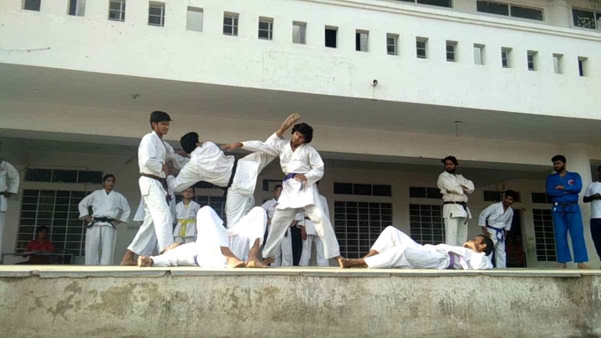
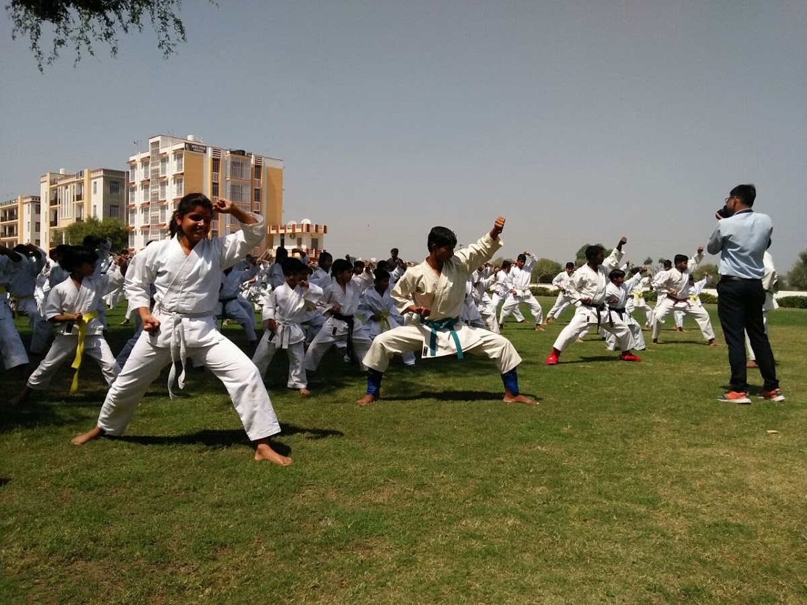
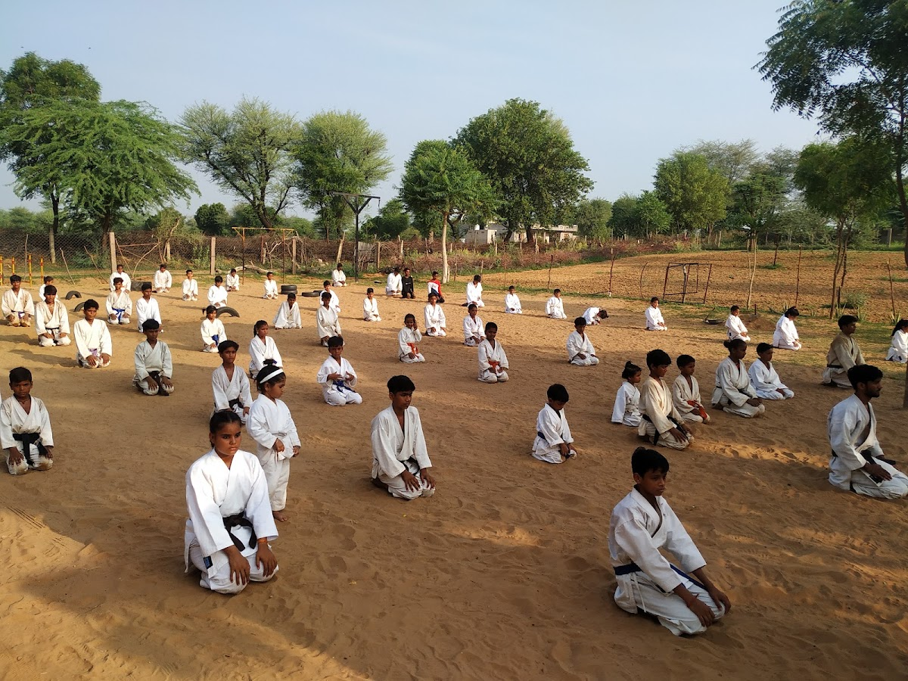
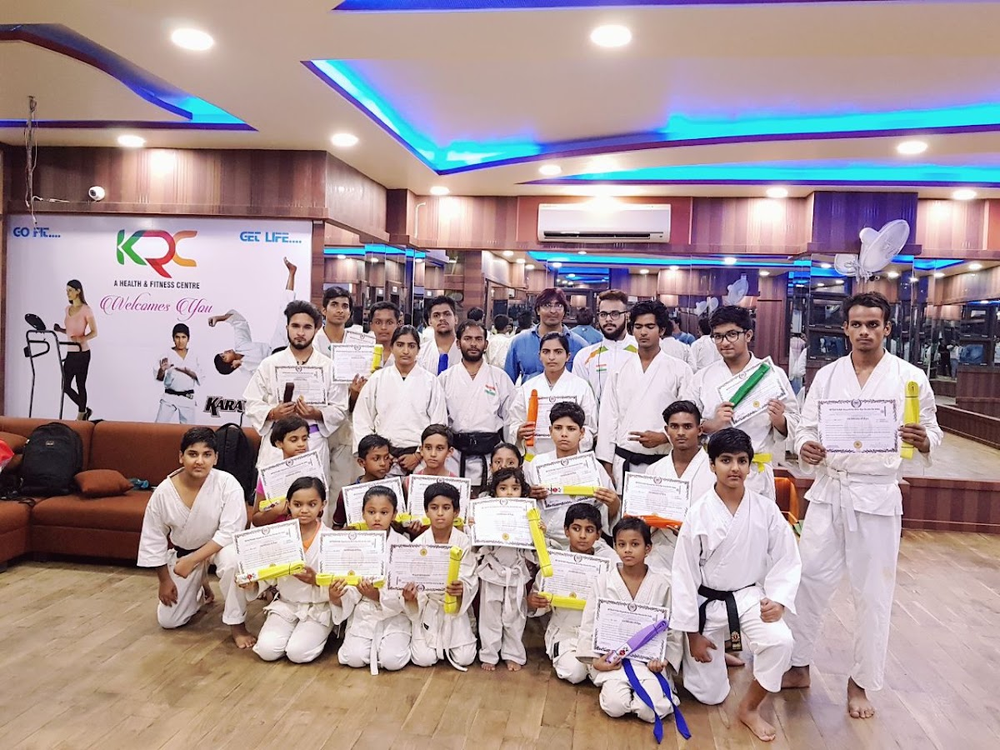

BUILT IN
THE FIGHT.
Strength is earned. Confidence is built.
Find what you’re made of — one round at a time.
A STRONGER BODY.
A DIFFERENT MINDSET.
Established in 2012, Panther’s Sports Academy brings professional martial arts and sports training to children, teenagers and adults in Jaipur. Led by Shihan Hemant Kumar, a 5th Dan Black Belt with 25 years of experience, we build fitness, discipline, confidence and self-defence skills while preparing students for district, state, national and international competitions.
Our mission: to empower every student through martial arts education and develop confident, disciplined and responsible individuals.
FIND YOUR DISCIPLINE ↗YOUR WAY
TO STRONG.
Learn the craft. Build your engine.
Discover the training that moves you.

KARATE
Hayashi-Ha Shito-Ryu karate.
From first stances to advanced competition training.

SELF-
DEFENCE
Practical self-protection for girls, women and adults.
Build awareness, confidence and personal safety skills.

MARTIAL
ARTS
Judo, Taekwondo, Boxing and Grappling.
Japanese Weapons Training included with regular training.
Kids Martial Arts · Adults Martial Arts · Advanced Competition Training
Beginners and advanced students welcome. Japanese Weapons Training included with regular academy training.
SHOW UP.
PUT IN WORK.
GO AGAIN.
You don’t need to arrive as an athlete. You need a reason to start. Talk to the team about your experience, your goals, and the right training path for you.
FOUNDER & CHIEF INSTRUCTOR
SHIHAN
HEMANT KUMAR.
5th Dan Black Belt · Rajasthan Chief Instructor & Examiner
Founder of Panther’s Sports Academy and associated with the Mitsuya-Kai Association of Rajasthan, Shihan Hemant Kumar brings 25 years of coaching experience to every student’s journey. His work spans school and college coaching, referee seminars, martial arts championships and self-defence camps for girls.
A national-level karate referee and first ‘A’ Grade Referee in both Kata and Kumite, he combines technical training with discipline, respect and competition preparation.
- Gold — Okinawan Shorin-Ryu Karate Do International Association of India
- Silver & bronze — All India Karate Do Federation and national karate championships
- 33rd National Games — Guwahati, 2007 participant
- Coaching & service — referee seminars, championship organisation and self-defence initiatives across Rajasthan
YOUR TIME.
YOUR TRAINING.
Structured batches for children, adults and senior male and female students.
TRAINING BATCHES
- Morning batch
- 6:00 AM – 8:00 AM
- Evening kids batch
- 5:00 PM – 7:00 PM
- Adults & seniors · male/female
- 7:15 PM – 9:00 PM
MEMBERSHIP FEES
| Membership | Fees |
|---|---|
| Monthly | ₹2,000 |
| Quarterly | ₹5,500 |
| Half-yearly | ₹10,000 |
| Yearly | ₹20,000 |
Japanese Weapons Training included with regular academy training.
AWARENESS.
CONFIDENCE.
STRENGTH.
85,000+ girls trained through self-defence initiatives, according to the academy.
Special programs for girls and women build practical self-protection skills, personal safety awareness and the confidence to act.

INDIVIDUAL
GRIT.
SHARED
ENERGY.
Step inside a martial arts community in Shanti Nagar. See the academy, meet the team, and ask about a training path that suits your goals.
INSIDE
PANTHER’S.
Our students, achievements and everyday academy moments — in photographs shared by the academy.
43 academy photographs
Photographs supplied by Panther’s Sports Academy, together with the academy photos previously featured on this website.
GOOD TO KNOW.
Can I start if I’m new to martial arts?
Contact the academy with your experience and fitness goals. The team can help you choose a suitable training program and explain how to begin.
What are the fees and session timings?
Morning: 6:00–8:00 AM. Kids: 5:00–7:00 PM. Adults and senior male/female batch: 7:15–9:00 PM. Membership: monthly ₹2,000; quarterly ₹5,500; half-yearly ₹10,000; yearly ₹20,000. Japanese Weapons Training is included with regular academy training. Contact us to confirm availability.
Where is the academy?
389 B, Shanti Nagar B, Opposite CAP Badminton Academy, Gurjar Ki Thadi, Jaipur, Rajasthan 302019. Use the directions link below to plan your visit.
What should I bring for my first session?
Ask the team about the requirements for your chosen discipline before visiting, including suitable clothing and any protective equipment.
MAKE YOUR
FIRST MOVE.
One conversation. A new direction. Let’s talk training.
OR CALL +91 96494 76845 ↗MEET US
ON THE MAT.
389 B, Shanti Nagar B,
Opposite CAP Badminton Academy,
Gurjar Ki Thadi, Jaipur, Rajasthan 302019.